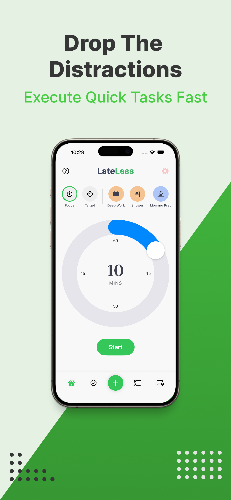
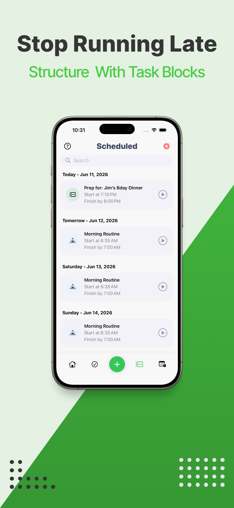
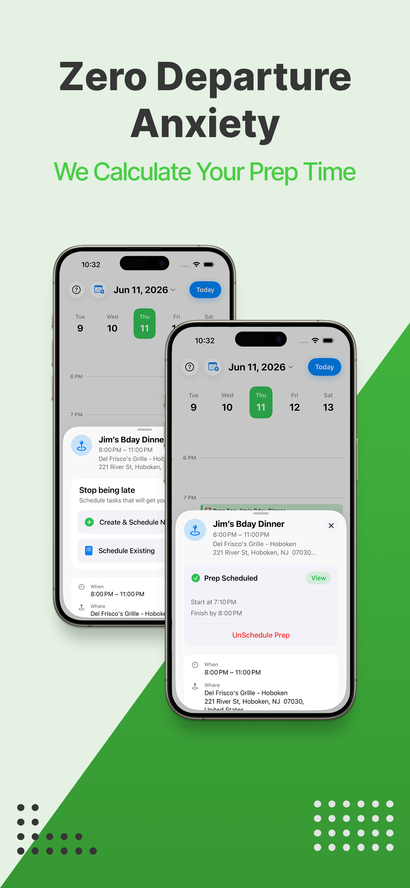
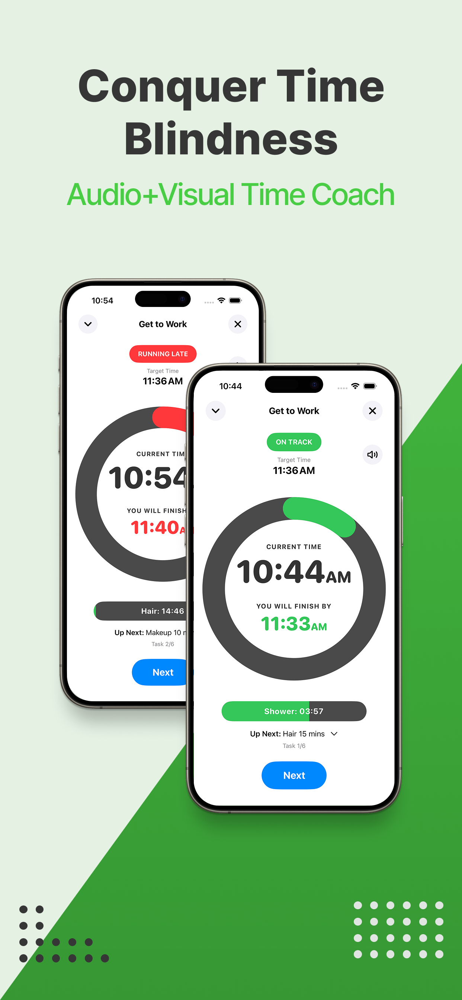

Accountability Over Forgiveness
Master your momentum.

Master your momentum.
Conquer time blindness.
LateLess is a tactical pacing tool designed to solve the chronic problem of "time blindness". Unlike standard planners, it acts as a "strict coach" to ensure you actually make it out the door on time.
Requires iOS 16.0 or later. Built natively in Swift.



